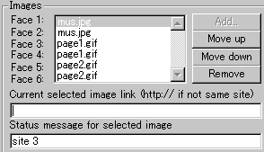
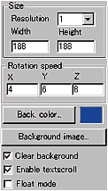
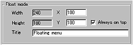

|
This applet animates a cube texture mapped with
your selection of images. Although at most you can apply 6 different
images to 6 faces of the cube, only 3 images, each of which is mapped
on two faces of the cube, work well. This reduces the total download
size in half apart from .class and .html files.
Each face of the cube can be associated a unique URL, so this cube
works as a menu with up to 6 different designations.
[For more technical
information about the available parameters, click here.]
Most parameters are self-explanatory and you can
always see brief description of each parameter by moving the mouse
pointer over the wizard.
 |
Set your choice of
images for each face of the cube. The number of images can be
anything up to 6, but I recommend you 3 or 6. |
|
You can even set only 1 image for all faces,
but the result won't be breathtaking.
All images must be gif or jpeg formatted and
the image size must be 128*128 or 256*256. No other sizes
are allowed. In addition, you can't mix these two different
sizes of images. If you choose a 128*128 image for a face,
the rest of the faces must be associated with 128*128 images
in size. The same goes to 256*256 pixel images.
When you set all faces with images, then you
can associate each face with a unique link and a status message,
which is displayed at the bottom of the browser window when
a mouse pointer is over a linked face.
|
 |
Next, decide the applet size and the
resolution, which enlarges the internally calculated
image and works as a zooming factor. Set it at 1, if you want
the best result.
Then, you set either background colour
or background image. They are exclusively applied.
If you set background image, background colour will be dismissed.
If you would like the menu to appear in a
small new window, check "Float mode" box.
|
You can define the rotation velocity (x, y, z) of the cube
while your mouse pointer doesn't control it.
Then you decide if textscroll function is enabled
by checking "Enable textscroll" box.
An important parameter called "Clear background"
should always be enabled. Without this function, you can't see a
cube as cube should be. The area within a cube rotates is painted
as the motion continues and looks awful! So, don't forget to check
this parameter.
Floating Mode
If you have selected floating menu mode, a new configurator
appears when you click "Next" button. (See below.)
When you activate this mode, the applet size itself can be as small
as 1 pixel, but MUST NOT be zero so as to embed the applet to your
HTML document.

Set the floating window size (Width, Height) and give the initial
position when a window first appears. You can set the name of the
window. If you would like to see the menu window always appear on
top of other windows, check "Always on top box", otherwise
leave it unchecked.
Proceed to the textscroll
menu if you have checked the textscroll box; otherwise go to
the expert menu.
|